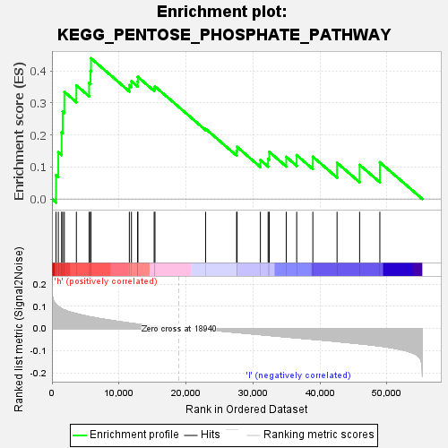

| | | Dataset | VCAN.VCAN.cls#h_versus_l.VCAN.cls#h_versus_l_repos |
| Phenotype | VCAN.cls#h_versus_l_repos |
| Upregulated in class | h |
| GeneSet | KEGG_PENTOSE_PHOSPHATE_PATHWAY |
| Enrichment Score (ES) | 0.43988568 |
| Normalized Enrichment Score (NES) | 1.2320647 |
| Nominal p-value | 0.22222222 |
| FDR q-value | 0.9316165 |
| FWER p-Value | 0.977 |
Table: GSEA Results Summary

Fig 1: Enrichment plot: KEGG_PENTOSE_PHOSPHATE_PATHWAY
Profile of the Running ES Score & Positions of GeneSet Members on the Rank Ordered List
| SYMBOL | TITLE | RANK IN GENE LIST | RANK METRIC SCORE | RUNNING ES | CORE ENRICHMENT | | 1 | TKT | na | 601 | 0.108 | 0.0745 | Yes |
| 2 | PGM1 | na | 947 | 0.098 | 0.1462 | Yes |
| 3 | PFKP | na | 1439 | 0.089 | 0.2080 | Yes |
| 4 | PRPS1 | na | 1599 | 0.086 | 0.2735 | Yes |
| 5 | ALDOC | na | 1845 | 0.083 | 0.3351 | Yes |
| 6 | FBP2 | na | 3644 | 0.066 | 0.3552 | Yes |
| 7 | G6PD | na | 5545 | 0.053 | 0.3630 | Yes |
| 8 | PFKL | na | 5752 | 0.052 | 0.4004 | Yes |
| 9 | PGLS | na | 5823 | 0.051 | 0.4399 | Yes |
| 10 | TKTL2 | na | 11548 | 0.024 | 0.3556 | No |
| 11 | FBP1 | na | 11862 | 0.023 | 0.3682 | No |
| 12 | ALDOA | na | 12790 | 0.019 | 0.3668 | No |
| 13 | TKTL1 | na | 12815 | 0.019 | 0.3818 | No |
| 14 | RPEL1 | na | 15250 | 0.011 | 0.3461 | No |
| 15 | PGD | na | 15372 | 0.010 | 0.3519 | No |
| 16 | PFKM | na | 22925 | -0.005 | 0.2194 | No |
| 17 | RPE | na | 27556 | -0.018 | 0.1497 | No |
| 18 | GPI | na | 27626 | -0.018 | 0.1628 | No |
| 19 | PRPS1L1 | na | 31104 | -0.028 | 0.1218 | No |
| 20 | RPIA | na | 32256 | -0.031 | 0.1255 | No |
| 21 | TALDO1 | na | 32425 | -0.031 | 0.1473 | No |
| 22 | RBKS | na | 34959 | -0.038 | 0.1318 | No |
| 23 | DERA | na | 36522 | -0.042 | 0.1371 | No |
| 24 | PRPS2 | na | 38931 | -0.049 | 0.1321 | No |
| 25 | ALDOB | na | 42544 | -0.059 | 0.1131 | No |
| 26 | PGM2 | na | 45912 | -0.069 | 0.1067 | No |
| 27 | H6PD | na | 48931 | -0.079 | 0.1147 | No |
Table: GSEA details [plain text format]
Fig 2: KEGG_PENTOSE_PHOSPHATE_PATHWAY
Blue-Pink O' Gram in the Space of the Analyzed GeneSet
 Fig 3: KEGG_PENTOSE_PHOSPHATE_PATHWAY: Random ES distribution
Fig 3: KEGG_PENTOSE_PHOSPHATE_PATHWAY: Random ES distribution
Gene set null distribution of ES for KEGG_PENTOSE_PHOSPHATE_PATHWAY